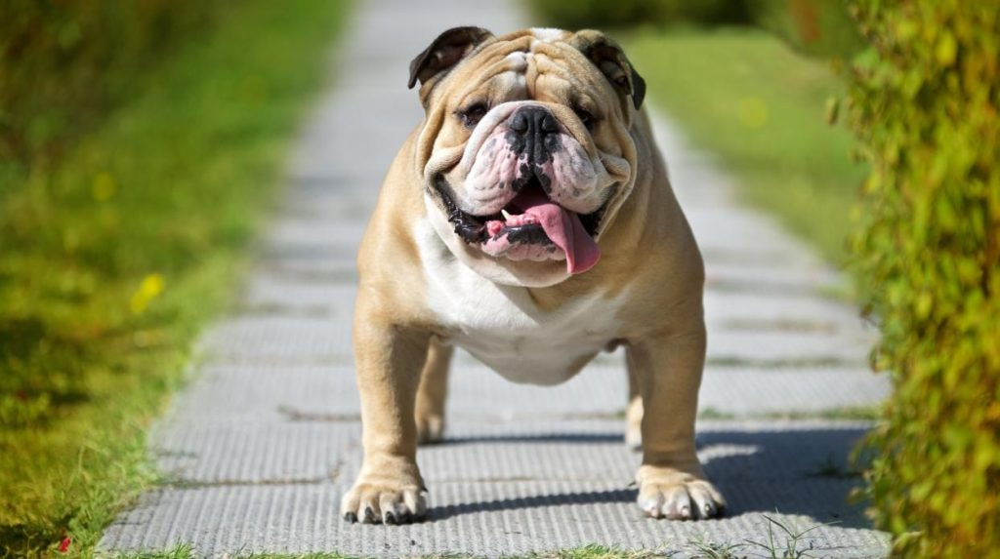

Inicio
Volver a perros

Nombre: Gastón
Edad: 1 año
Género: Macho
Esterelizado: Si
Nro. Chip: 6226514
Comportamiento: Gastón es un perrito amigable con los niños, es muy perezoso.
Le gusta jugar aunque se agita demasiado. Es un perrito tranquilo por tanto es apto para vivir en departamento.